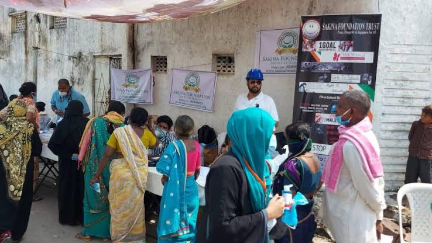

Homeless individuals often face a lack of access to basic needs such as food, shelter, and medical care, and are at a higher risk of developing physical and mental health problems. Homelessness can also lead to social isolation, stigma, and discrimination, which can further exacerbate the challenges faced by homeless individuals.
To address homelessness, various approaches can be taken, including providing emergency shelter, transitional housing, and permanent supportive housing. Support services, such as mental health and addiction treatment, job training, and case management, can also help homeless individuals rebuild their lives and transition to stable housing.
Efforts to prevent homelessness, such as increasing affordable housing, providing financial assistance, and addressing the root causes of homelessness, are also important in addressing the issue of homelessness in communities.Service-delivery NGOs provide public goods and services which governments of developing countries are unable to provide due to a lack of resources. They may be contractors or collaborate with government agencies to reduce the cost of public goods. Capacity-building NGOs affect "culture, structure, projects and daily operations".
n the context of NGOs (Non-Governmental Organizations), diplomacy refers to the practice of building and maintaining partnerships with other organizations, stakeholders, and governments to achieve common objectives related to social or environmental issues.
NGOs often work in complex environments, where multiple stakeholders have different interests and goals. Diplomacy allows NGOs to navigate these complex environments and engage in constructive dialogue with different actors to promote understanding, build consensus, and facilitate cooperation.